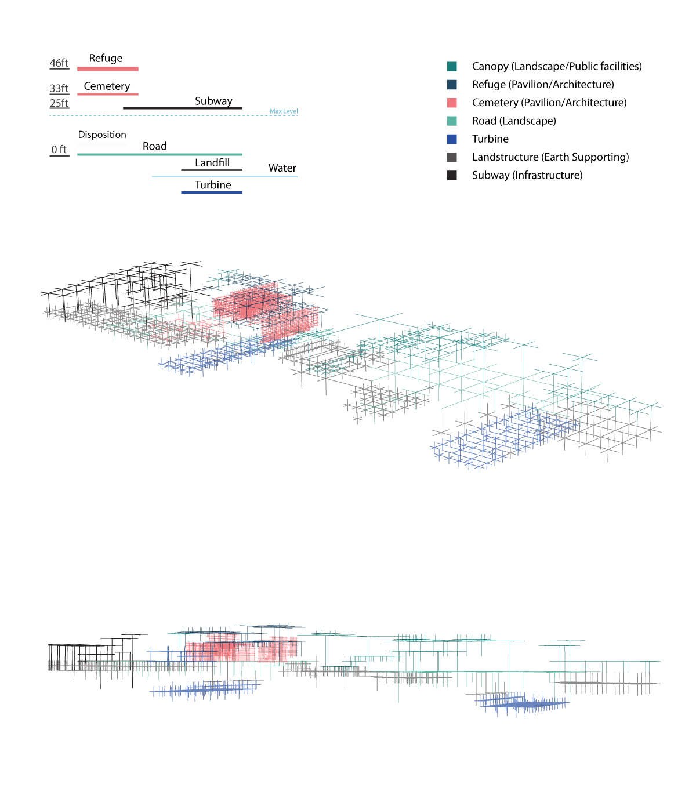
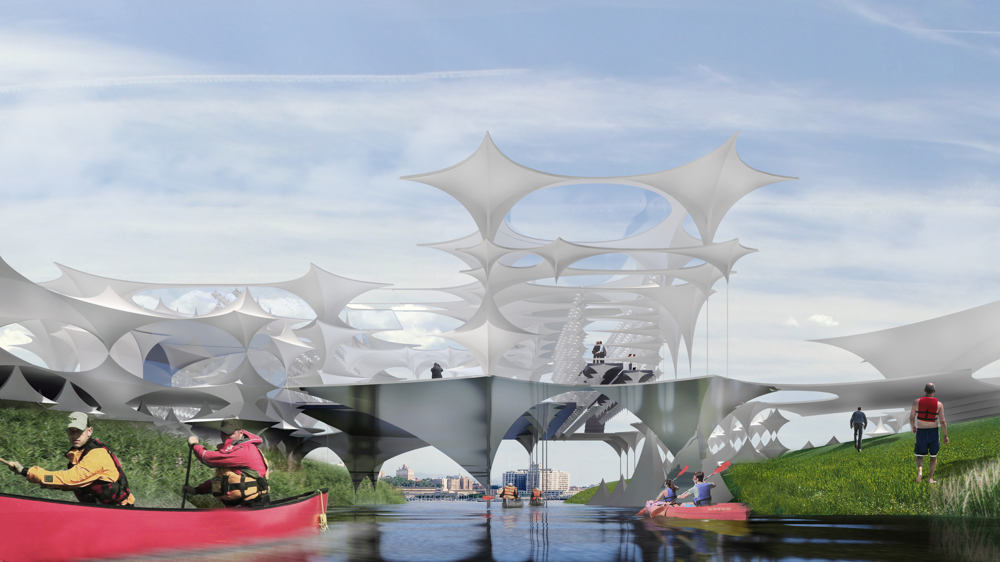
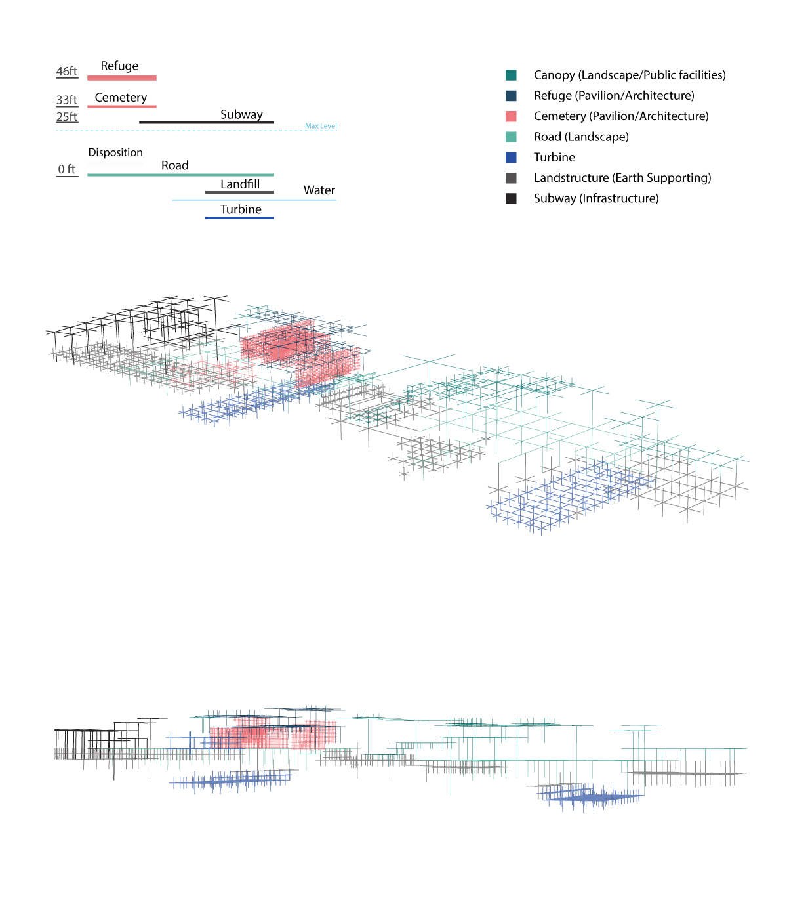
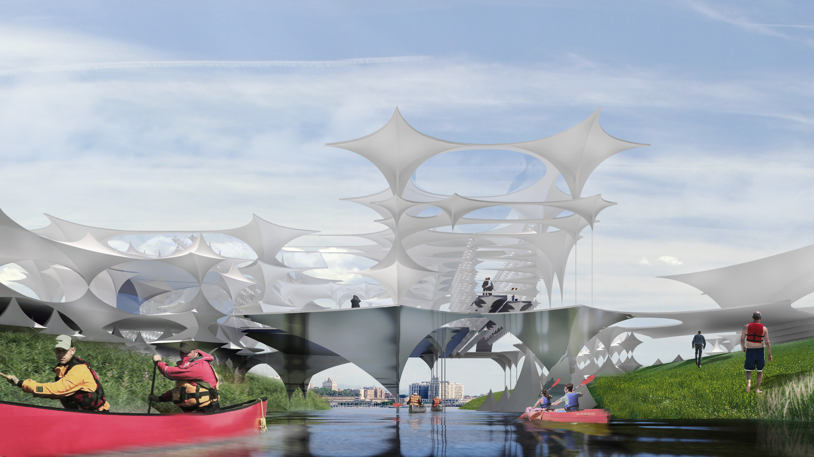
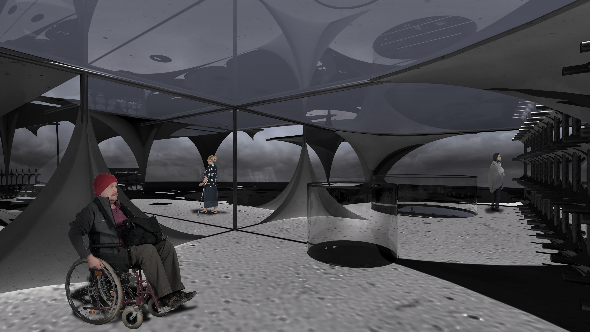
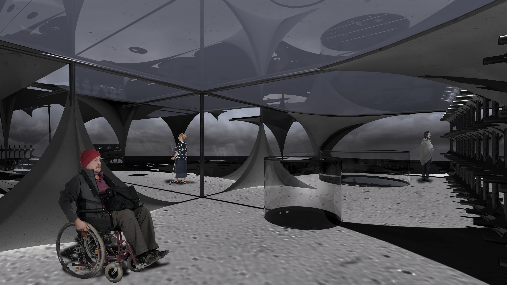

Death has to do with scales of temporality. With it comes memories that humans have—they are immaterial and will fade in the future. The city is in constant change. Buildings and populations rise and fall. Therefore, Temporality is an eternal element of Death and the City. We divide temporality into a dichotomy between the physical and the non-physical. Physical temporalities include: buildings, population, coastline and human bodies. Meanwhile, human’s memory, soul and spirit are immaterial and not quantitative. Slippages and shifts within temporality present vulnerabilities. The metropolis of New York contains over 8 million people and near 6,000 high-rise buildings. Manhattan is one of the densest places in the world. Our project will reinforce the city’s and humanity’s vulnerabilities, strategically mitigating and sometimes amplifying it.
you-wow
Architecture Installation Research About
Vunerability: Life and Death
 



 

© 2018 Rhea | Yuhwa Jeong. All Rights Reserved | you-wow.design